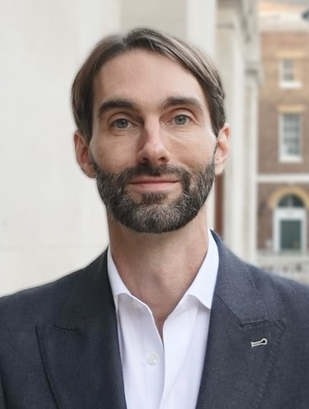
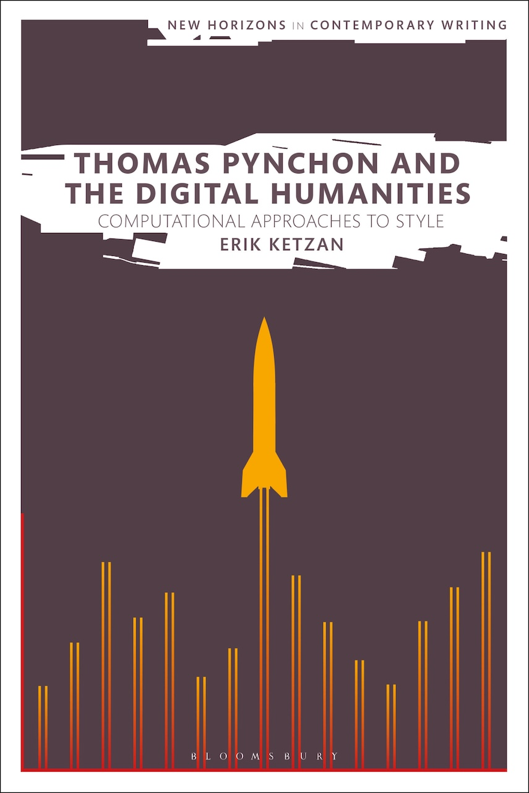

Dr. Erik Ketzan is Lecturer (~Assistant Professor) in Digital Humanities and Cultural Computation at King's College London, Department of Digital Humanities. Erik publishes and teaches on computational approaches to literary and historical texts, as well as legal and ethical issues in research data and research infrastructures.
Erik completed a PhD in English/Digital Humanities at Birkbeck, University of London in 2020, focusing on computational approaches to style in postmodern literature, then worked as a Postdoctoral Researcher at the University of Cologne, Department of Digital Humanities (project: "EncycNet: A Historical Encyclopedia Knowledge Graph"), creating a knowledge graph (a nodes-and-edges network) of encyclopedias from the 18th–20th centuries using natural language processing, neural network/machine learning/AI classification, and semantic web annotation. Erik then worked two years as a Postdoctoral Research and Teaching Fellow at Trinity College Dublin, Centre for Digital Humanities, as well as Coordinator (deputy director) of the Masters Degree in Digital Humanities and Culture at Trinity. Prior to his PhD, Erik worked as an academic researcher in the Computational Linguistics and Research Infrastructure departments of the Leibniz Institute for the German Language (Mannheim, Germany), and CLARIN – European Research Infrastructure for Language Resources and Technology, focusing on legal and ethical issues in research data.
Monograph

Thomas Pynchon and the Digital Humanities: Computational Approaches to Style
Bloomsbury, 2022
"A landmark contribution to Pynchon Studies."
Prof. Luc Herman, University of Antwerp. Co-Editor, The Cambridge Companion to Thomas Pynchon
"You can count on these findings percolating through the Pynchon scholarship over the course of the next few years. I'm sure that in future no-one will want to venture claims about Pynchon's style without first checking to see what Ketzan has discovered."
Prof. Brian McHale, The Ohio State University. Author, Postmodernist Fiction
"A breakthrough study of the role that computational approaches to literature can play in the analysis of Pynchon's works. Ketzan combines close and distant reading in truly compelling ways."
Associate Prof. Samuel Thomas, Durham University. Author, Pynchon and the Political
Book Chapters
- Erik Ketzan and Pawel Kamocki, "Digital Humanities Research Under United States and European Copyright Laws: Evolving Frameworks", in Access and Control in Digital Humanities (Routledge, 2021). Post-print
Peer-Reviewed Journals
- Erik Ketzan, "A Bibliometric Overview of Pynchon Studies: Introducing the Thomas Pynchon Online Bibliography (TPOB)", Orbit: A Journal of American Literature 12:1 (2025). DOI
- Erik Ketzan, "Review: Computational Drama Analysis: Reflecting on Methods and Interpretations", German Studies Review 48:1 (2025). DOI
- Erik Ketzan and Martin Eve, "The Anxiety of Prestige in Stephen King's Stylistics", Journal of Computational Literary Studies 3:1 (2024). DOI
- Erik Ketzan, "Review: Modes of Composition and the Durability of Style in Literature by David L. Hoover", Digital Scholarship in the Humanities (2024). DOI
- Erik Ketzan, Jennifer Edmond, and Carl Vogel, "Need a Good Book about Privacy? Evaluating Dictionary-Based Corpus Query for Detecting the Topic of Privacy in Literary Texts", Journal of Computational Literary Studies 2:1, 1–19 (2023). DOI
- Erik Ketzan, "Review of Pynchon's Sound of Music", Orbit: A Journal of American Literature 10:2 (2022). Link
- Erik Ketzan and Christof Schöch, "Classifying and Contextualizing Edits in Variants with Coleto: Three Versions of Andy Weir's The Martian", Digital Humanities Quarterly 15:4 (2021). Link
- Erik Ketzan, "Clash of the Modern/Postmodern Titans? James Joyce in Gravity's Rainbow", English Studies 101:3 (2020), 333–356. DOI
- Michael Berskens, Pawel Kamocki, and Erik Ketzan, "Implied Consent – A Silent Revolution in Digital Copyright Law. US, German and French Perspectives", Revue Internationale du Droit d'Auteur 238, 2–109 (2013). [available in English, French, and Spanish] Link
- Erik Ketzan, "Pynchon Nods: Proust in Gravity's Rainbow", Orbit: A Journal of American Literature 1:1 (2012). DOI
- Erik Ketzan, "Rebuilding Babel: Copyright and the Future of Online Machine Translation", Tulane Journal of Technology & Intellectual Property 205 (2007). Link
Conference Papers (Peer-reviewed)
- Thora Hagen and Erik Ketzan, "Introducing Traveling Word Pairs in Historical Semantic Change: A Case Study of Privacy Words in 18th and 19th Century English", Fourth Conference on Computational Humanities Research, EPITA, Paris, December 6–8, 2023. PDF
- Thora Hagen, Leonard Konle, Erik Ketzan, Fotis Jannidis, and Andreas Witt, "Tracing the Shift to 'Objectivity' in German Encyclopedias of the Long Nineteenth Century", DH2023, Graz, Austria, July 10–14, 2023. PDF
- Erik Ketzan and Nicolas Werner, "'Entrez!' she called: Evaluating Language Identification Tools in English Literary Texts", Third Conference on Computational Humanities Research, University of Antwerp, Belgium, 12–14 December 2022. PDF Highly Commended Paper Award, CHR2022
- Erik Ketzan, Thora Hagen, Fotis Jannidis, and Andreas Witt, "Quantitative Analysis of Gendered Assumptions in a Nineteenth-Century Women's Encyclopedia", DH2022, The University of Tokyo, 25–29 July 2022. PDF
- Andreas van Cranenburgh and Erik Ketzan, "Stylometric Literariness Classification: the Case of Stephen King", 2021 Conference on Empirical Methods in Natural Language Processing, Proceedings of the 5th Joint SIGHUM Workshop on Computational Linguistics for Cultural Heritage, Social Sciences, Humanities and Literature, Punta Cana, Dominican Republic, November 11, 2021. PDF
- Thora Hagen, Erik Ketzan, Fotis Jannidis and Andreas Witt, "Twenty-Two Historical Encyclopedias Encoded in TEI: A New Resource for the Digital Humanities", LaTeCH-CLfL 2020: 4th Joint SIGHUM Workshop on Computational Linguistics for Cultural Heritage, Social Sciences, Humanities and Literature, December 2020. PDF
- Erik Ketzan, "Should Digital Humanities Consult an Oracle for 'The Copyright Case of the Decade'?", Workshop: Copyright and Humanities Research: A Global Perspective, DH2019, Utrecht, Netherlands, 8 July 2019.
- Pawel Kamocki, Erik Ketzan, Julia Wildgans, Andreas Witt, "Toward a CLARIN Data Protection Code of Conduct", CLARIN Annual Conference 2018, Pisa, 8–10 October 2018. PDF
- Pawel Kamocki, Erik Ketzan, Julia Wildgans, Andreas Witt, "New exceptions for Text and Data Mining and their possible impact on the CLARIN infrastructure", Selected papers from the CLARIN Annual Conference 2018, Pisa, 8–10 October 2018. PDF
- Pawel Kamocki, Erik Ketzan, Julia Wildgans, Andreas Witt, "Das neue "Gesetz zur Angleichung des Urheberrechts an die aktuellen Erfordernisse der Wissensgesellschaft" und seine Auswirkungen für Digital Humanities" ("The new German research exception for copyright and what it means for digital humanities"), DHd2018 Annual Conference, Book of Abstracts, pp. 156–58, February 26 – March 2, 2018. PDF
- Aleksei Kelli, Krister Lindén, Kadri Vider, Penny Labropoulou and Erik Ketzan, "Implementation of an Open Science Policy in the context of management of CLARIN language resources: a need for changes?", CLARIN2017 Annual Conference, Book of Abstracts, September 18–20, 2017. PDF
- Erik Ketzan and Christof Schöch, "What Changed When Andy Weir's The Martian Got Edited?", Digital Humanities 2017, Conference Book of Abstracts (Montréal: McGill University & Université de Montréal, 2017). DOI
- Pawel Kamocki, Erik Ketzan, and Andreas Witt, "Lizenzauswahlwerkzeuge für die digitalen Geisteswissenschaften" ("Automatic License Choosers for Digital Humanities"), DHd 2016, Conference Abstracts, University of Leipzig (Duisburg: Nisaba, 2016), 336–337. PDF
- Erik Ketzan and Pawel Kamocki, "Legal and Ethical Aspects of Authorship Attribution Using Stylometry – EU and US Perspectives", Digital Humanities 2016: Conference Abstracts. Jagiellonian University & Pedagogical University, Kraków, pp. 104–108. Link
- Erik Ketzan, "Literary Wikis: Crowd-sourcing the Analysis and Annotation of Pynchon, Eco and Others", Digital Humanities 2012 Conference Abstracts (Hamburg: Hamburg University Press, 2012), 252–54. PDF
- Piotr Bański, Peter M Fischer, Elena Frick, Erik Ketzan, Marc Kupietz, Carsten Schnober, Oliver Schonefeld, Andreas Witt, "The New IDS Corpus Analysis Platform: Challenges and Prospects", Proceedings of the Eighth International Conference on Language Resources and Evaluation (LREC 2012). PDF
Workshops / Seminars / Panels
- Panel Co-organizers: Erik Ketzan and Kim Nayyer. "Legal Issues in Digital Humanities: Analysis of Recent Advocacy and Continuing and Emerging Issues." DH2023, Graz, Austria, July 10–14, 2023.
- Lecturer, Workshop: "Legal, Ethical and Practical issues of data scraping in the humanities", Trinity College Dublin, Centre for Digital Humanities, February 16, 2022.
- Lecturer, Workshop: "Working with Digital Text Corpora", Trinity College Dublin, Centre for Digital Humanities, October 14, 2021.
- Seminar Organiser, "Close Reading + Digital Humanities: A Dialogue", Birkbeck, University of London, April 20, 2018. Supported by The Lorraine Lim Postgraduate Fund.
- Program Committee (Khalid Choukri, Pawel Kamocki, Erik Ketzan, Stelios Piperidis, Prodromos Tsiavos, Andreas Witt), LREC 2018: Legal Issues Workshop – Miyazaki, Japan – 8 May, 2018.
- Program Committee (Khalid Choukri, Erik Ketzan, Stelios Piperidis, Prodromos Tsiavos, Andreas Witt), LREC 2016: Legal Issues Workshop, Portorož, Slovenia, May 24, 2016. Link
- Program Committee (Erik Ketzan, Prodromos Tsiavos, Khalid Choukri), LREC 2014: Legal Issues in Language Resources and Infrastructures Workshop – Reykjavik, Iceland – 27 May, 2014. Link
Funding Organization Best Practice Guidelines
- Roundtable authorship, DFG (Deutsche Forschungsgemeinschaft, German Research Foundation), "Guidelines for Building Language Corpora Under German Law: Guidelines by the DFG Review Board on Linguistics", CLARIN Legal Issues Committee White Paper Series, 2017. Translation from German to English by Erik Ketzan, Julia Wildgans, and John Weitzmann. PDF
- Roundtable authorship, DFG (Deutsche Forschungsgemeinschaft, German Research Foundation), "Information on Legal Issues for the Handling of Language Corpora" (Informationen zu rechtlichen Aspekten bei der Handhabung von Sprachkorpora), 2015. PDF
White Papers
- Pawel Kamocki, Erik Ketzan, Julia Wildgans, "Language Resources and Research Under the General Data Protection Regulation", CLARIN Legal Issues Committee White Paper Series, 2018. PDF
- Erik Ketzan et al., "Guidelines for Building Language Corpora Under German Law: Guidelines by the DFG Review Board on Linguistics", CLARIN Legal Issues Committee White Paper Series, 2017. PDF
- Pawel Kamocki and Erik Ketzan, "Creative Commons and Language Resources: General Issues and What's New in CC 4.0", CLARIN Legal Issues Committee White Paper Series, 2014. PDF
Websites
- Pawel Kamocki and Erik Ketzan, CLARIN Legal Information Platform
- Tim Ware and Erik Ketzan, Co-Architects, Pynchonwiki.com
Select Presentations
- Erik Ketzan, "How AI Can Accelerate Bibliometrics in the Humanities", Queen Mary University of London, School of Arts, Postgraduate Research Seminar (PGRS), April 16, 2026.
- Erik Ketzan, "Close and Distant Reading: Observations and Predictions", Close Reading in the Digital World conference, University College London (UCL), June 10, 2024.
- Erik Ketzan, "The EU AI Act's Potential Impact on Digital Humanities: Initial Observations", DH2023, Graz, Austria, July 14, 2023.
- Erik Ketzan, "The Other Side of The Great Divide: The Anxiety of Prestige in Popular Fiction", School of English Staff-Postgraduate Seminar Series, Trinity College Dublin, April 4, 2023.
- Erik Ketzan, "Corpus Query with LancsBox: A Crash Course", guest lecture, Comparative Literary Studies, Theory and Methodology, Trinity College Dublin, March 20, 2023.
- Erik Ketzan, "Digital Humanities Tools: A Crash Course", guest lecture, Comparative Literary Studies, Theory and Methodology, Trinity College Dublin, March 22, 2022.
- Erik Ketzan, "Working with Text Corpora", Digital Scholarship & Skills Workshop Series, Trinity College Dublin, October 14, 2021.
- Erik Ketzan, "Legal Issues in Digital Scholarly Editing", University of Cologne, Germany, Master's course Editionswissenschaft, January 28, 2021.
- Erik Ketzan, "Copyright Issues in Digital Humanities Research", University of Cologne, Germany, a.r.t.e.s. Graduate School Workshop on Research Data Management, December 16, 2020.
- Erik Ketzan und Thora Hagen, "Introducing EncycNet: Creating a Knowledge Graph from German Historical Encyclopedias", University of Cologne, Germany, MonTalk forum, November 23, 2020.
- Erik Ketzan, "Close Reading + Digital Humanities: Some Hows and Whys", Birkbeck, University of London, UK, April 20, 2018.
- Erik Ketzan and Christof Schöch, "Toward a Methodology for Detecting and Classifying Edits in Variants of Fiction. Test Case: Andy Weir's The Martian", Digital Humanities 2017, McGill University & Université de Montréal, Canada, August 11, 2017.
- Erik Ketzan and Christof Schöch, "Close/Machine-Reading Two Versions of Andy Weir's The Martian", American Comparative Literature Association Annual Meeting 2017, Utrecht University, Netherlands, July 9, 2017.
- Erik Ketzan, "Legal Issues in Digital Humanities: Introduction and Where Things Stand", UCL Centre for Digital Humanities Seminar Series, UK, May 31, 2017.
- Erik Ketzan, "Legal Issues and Language Resources", LREC 2016 Legal Issues Workshop, Portorož, Slovenia, May 24, 2016.
- Erik Ketzan, "Issues in Intellectual Property Enforcement", Birkbeck School of Law, University of London, invited presentation at Intellectual Property Law module, March 3, 2016.
- Erik Ketzan, "Legal Issues in Digital Humanities", European Summer School in Digital Humanities, University of Leipzig, Germany, July 29, 2015.
- Erik Ketzan, Jens Stegmann, Andreas Witt, "Building a Pynchon Corpus: Technical and Legal Issues", Pynchon Week 2015, Athens, Greece, June 11, 2015. Link
- Pawel Kamocki and Erik Ketzan, "Legal Issues in Sign Language Resources", CLARIN Workshop: Sign language resources: legal, technical, and crowd-sourcing issues, Hamburg University, Germany, December 13–14, 2014.
- Erik Ketzan, "Copyright and Legal Issues at the Institute for the German Language" (Das Urheberrecht und Rechtliche Fragestellungen am IDS), Institute for the German Language, Mannheim, Germany, November 8, 2014.
- Erik Ketzan, "Legal Issues and Language Resources: The Big Picture and What's Happened in the last 2 Years?", LREC 2014 Legal Issues in Language Resources and Infrastructures Workshop, Reykjavik, Iceland, 27 May 2014.
- Erik Ketzan, "Legal Issues in Digital Humanities: a Crash Course", University of Stuttgart, Germany, February 19, 2014.
- Pawel Kamocki and Erik Ketzan, "Preparation of corpora from online and other resources: current state of German and EU law", 7th Workshop of DFG Scientific Network Empirikom, TU Dortmund University, Germany, February 2014.